|
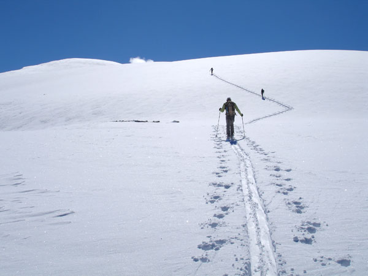
Teem freak reaching for the clouds. At this point foothill was sick in the cabin,
reaching for the asprin.
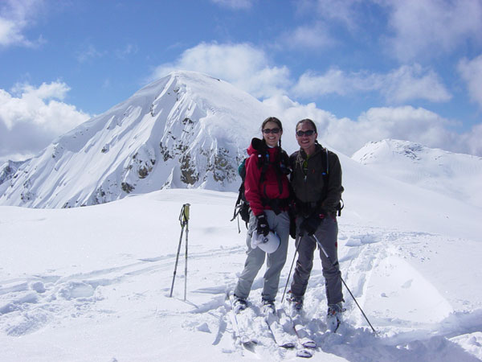
Powder Princess and the Evil Dr. in the foreground, John Carter Peak in the
background.
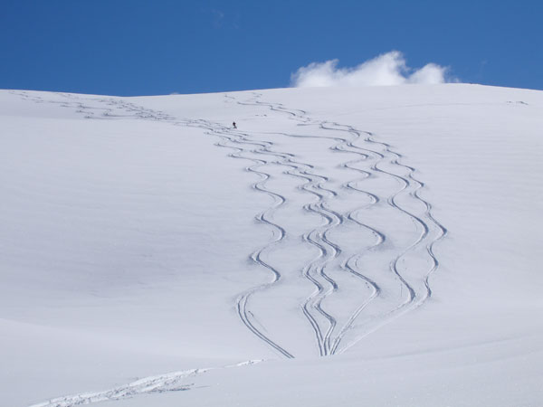
Each member of the team has a distinct signature.
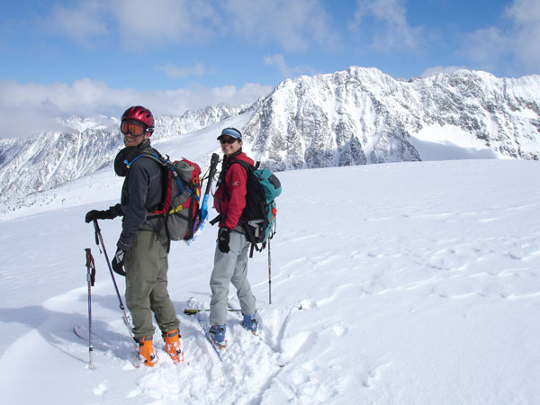
Helmüt and Pow Princess smiling for some reason..
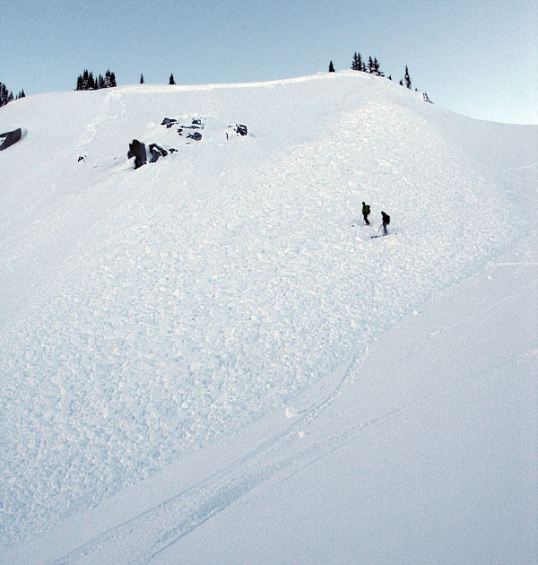
Here's the slide Helmüt set off after a reassuringly stable ski cut. (Humans
included to show scale). It's great when people set off avalanches because
afterward they're always willing to let you ski first.

This is the slide that Powder Princess set off and rode for a bit. (Those are
her turns into and out of the path). When you watch a loved one tumbling
in an avalanch, the memory burns quite clearly into your mind.
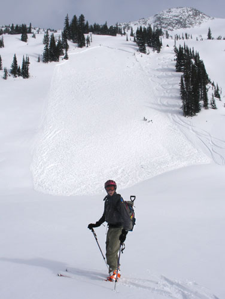
A nicely placed ski cut by Helmüt set off this long running slide.
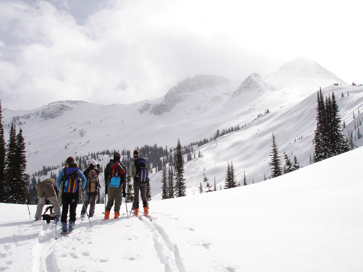
Looking at the toe of the glacier. Another time...
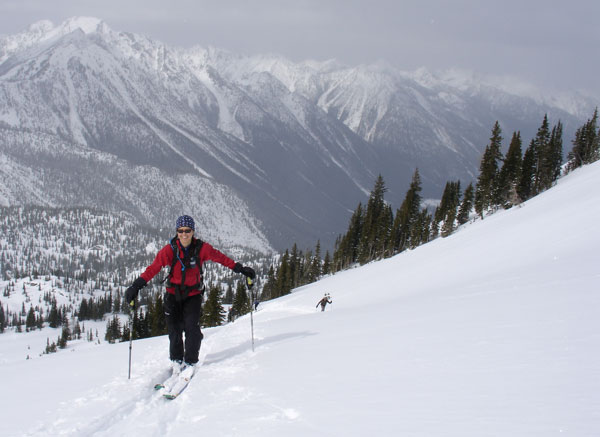
Big mountains look so small in photos.
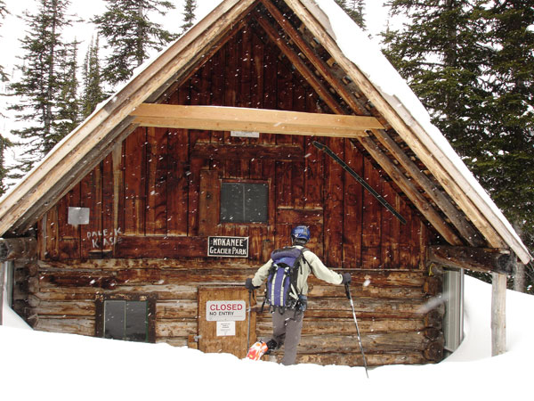
Here's the old, fabled Slocan Chief Cabin. This hut was in use up to just a
few years ago. The poor folks who stayed here had to use an outhouse!
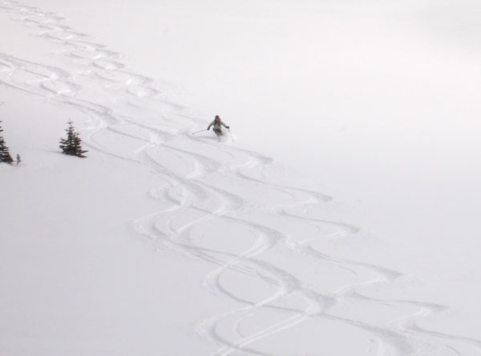
Figure 8ing tracks is challenging when your 8ing turns that are half the radius
of your own.
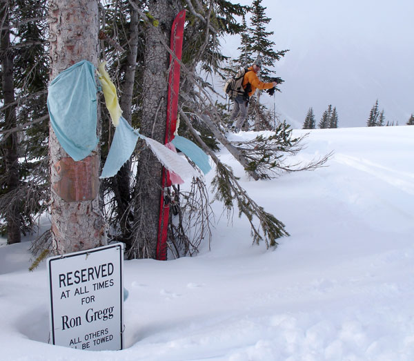
After skiing a run about 5 times, on our last run I noticed something in the
trees. Upon closer inspection we discovered this sad tribute to a skier who
was in an avalanche and "skied into the great white from this spot".
A reminder to pay the mountians due respect, and expect no respect in return.
Continue to Kokanee Cabin page 3
|